עץ פורש מינימלי — תכונות ואלגוריתם Prim
⏱ זמן משוער: 60 דק'
0. הבעיה: לחבר את הכל בזול ביותר
דמיינו שאתם צריכים לחבר קבוצת ערים בכבלי תקשורת. לכל חיבור אפשרי בין שתי ערים יש עלות, ואתם רוצים לחבר את כל הערים לרשת אחת — בעלות הכוללת הנמוכה ביותר. אין טעם לסגור מעגל (חיבור מיותר שרק מוסיף עלות), ולכן הפתרון הוא תמיד עץ. זהו בדיוק ה־עץ פורש מינימלי (MST).
המרצה מנסחת את הבעיה כך: נתון גרף לא־מכוון G=(V,E) שבו E הוא אוסף כל החיבורים האפשריים בין הקדקודים, ולכל קשת e∈E יש משקל w(e) שהוא עלות החיבור. מבקשים תת־קבוצת קשתות T⊆E שמחברת את כל הקדקודים ומקיימת שלוש דרישות:
- ללא מעגלים — אין מעגל ב־T (אחרת יש קשת מיותרת).
- מכסה את כל הקדקודים — T קשיר ופורש את כל V.
- סכום משקלי הקשתות מינימלי — W(T)=Σ(u,v)∈T w(u,v) קטן ככל האפשר.
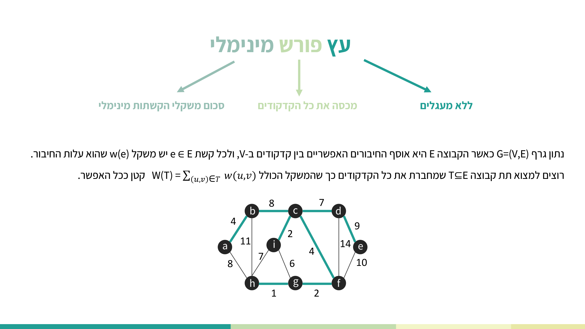
מקור: lec-mst-part-1.pdf (עמ' 2), minimum-spanning-tree.pdf (עמ' 1)
1. הפרדיגמה החמדנית והאלגוריתם הגנרי
כל אלגוריתמי ה־MST שנלמד הם חמדניים (greedy): בכל שלב מקבלים את ההחלטה שנראית הטובה ביותר מקומית (הקשת הזולה ביותר שאפשר להוסיף כרגע), ומקווים שהיא תוביל לאופטימום גלובלי. המרצה פותחת באנלוגיה ויזואלית: מציאת מינימום של פונקציה — "לרדת בכיוון היורד" לעבר המינימום.
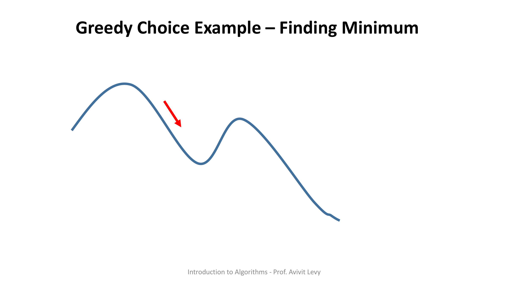
השאלה היא איזו קשת בטוח להוסיף בלי "לפספס" את האופטימום. את זה עונה מושג ה־קשת הבטוחה: קשת שאפשר להוסיף ל־A (הקבוצה שכבר בנינו) מבלי לאבד את היכולת להשלים את A לעפ"מ מלא. האלגוריתם הגנרי הוא בדיוק זה: בכל צעד מוסיפים קשת בטוחה, עד שמתקבל עץ פורש.
1.1 GENERIC-MST — הפסאודו־קוד
1. A ← ∅
2. While A doesn't form a spanning tree:
3. do find an edge (u,v) that is safe for A
4. A ← A∪{(u,v)}
5. return A
הסבר שורה־שורה:
- שורה 1: מתחילים מקבוצת קשתות ריקה A=∅.
- שורה 2: כל עוד A עדיין אינו עץ פורש (טרם חיברנו את כל הקדקודים).
- שורה 3: מוצאים קשת (u,v) שהיא בטוחה עבור A — כאן טמונה כל החוכמה.
- שורה 4: מוסיפים אותה: A ← A∪{(u,v)}.
- שורה 5: בסיום מחזירים את A — עפ"מ מלא.
Prim ו־Kruskal הם שני מימושים של האלגוריתם הגנרי; ההבדל ביניהם הוא איך בוחרים בכל שלב את הקשת הבטוחה (ומהו המבנה של A תוך כדי הבנייה). את Kruskal נלמד לעומק במודול הבא; כאן נתמקד ב־Prim.
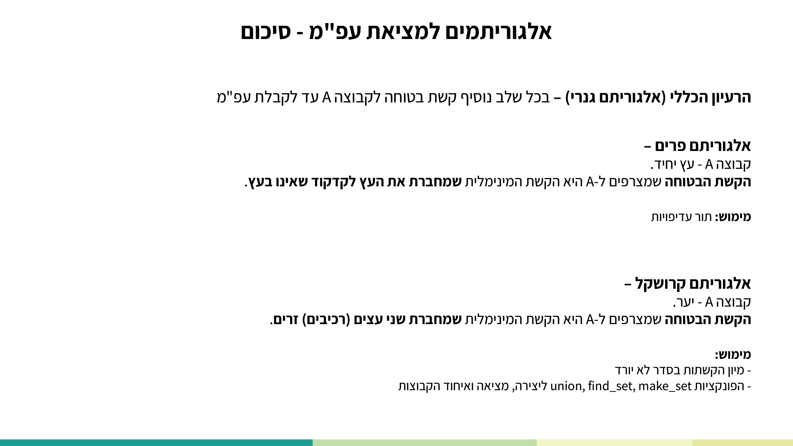
1.2 Trace קצר של GENERIC-MST על משולש
גרף הדוגמה הרץ של part-2 הוא משולש עם הקדקודים A,B,C והקשתות C–B=1, C–A=2, A–B=3:
- A={} → בוחרים את הקשת הבטוחה המינימלית C–B=1 → A={(C,B)}.
- בוחרים C–A=2 → A={(C,B),(C,A)}.
- הקשת A–B=3 אינה נבחרת — היא הייתה סוגרת מעגל. A כבר עץ פורש → return A. משקל העץ = 3.
מקור: lec-mst-part-2.pdf (עמ' 2–8), minimum-spanning-tree.pdf (עמ' 2)
2. חתכים: ההגדרות שמאחורי "קשת בטוחה"
כדי לנסח מתי קשת היא בטוחה, צריך את מושג ה־חתך (cut) וארבע הגדרות נלוות. כולן על אותו גרף G=(V,E):
- חתך (S, V−S) — חלוקה (partition) של קבוצת הקדקודים V לשתי קבוצות זרות.
- קשת חוצה (crosses) — קשת (u,v)∈E חוצה את החתך אם קצה אחד שלה ב־S והקצה השני ב־V−S.
- קשת קלה (light) — קשת שמשקלה מינימלי מבין כל הקשתות החוצות את החתך.
- חתך מכבד (respects) קבוצה A⊆E — אם אף קשת ב־A אינה חוצה את החתך.
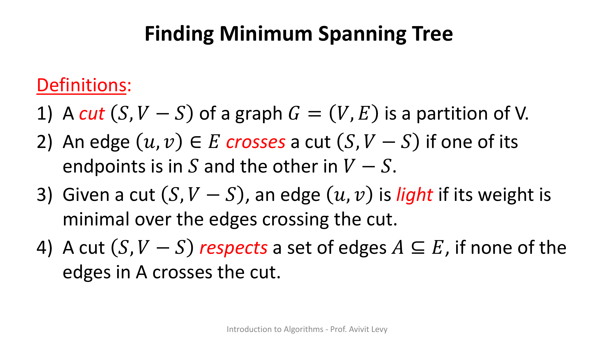
על גרף CLRS המרצה מציירת את החתך כקו גלי (סינוסי) החוצה את הגרף, עם חצים המסמנים ↑S (מעל) ו־↓V−S (מתחת). הקשתות שחוצות את החתך מודגשות באדום, והקשת הקלה שבהן היא המועמדת להצטרף לעפ"מ.
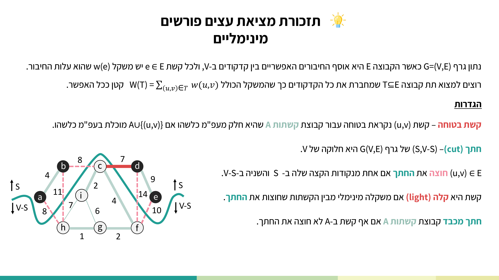
מקור: minimum-spanning-tree.pdf (עמ' 3–4), lec-mst-part-1.pdf (עמ' 3–8)
3. משפט הקשת הבטוחה (Cut Property) וההוכחה
זהו הלב התיאורטי של כל היחידה — המשפט שמצדיק את כל אלגוריתמי ה־MST החמדניים:
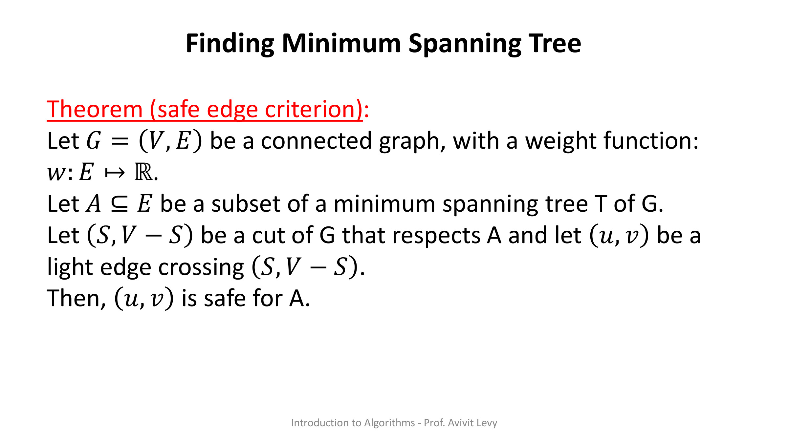
3.1 ההוכחה — טיעון ההחלפה (exchange argument)
לוקחים עפ"מ כלשהו T שמכיל את A. אם הקשת הקלה (u,v) כבר ב־T — סיימנו. אחרת, מראים שקיים עפ"מ אחר T' שמכיל את A∪{(u,v)}:
- מכיוון ש־T עץ פורש, קיים בו מסלול יחיד p מ־u ל־v. הוספת (u,v) סוגרת מעגל עם קשתות המסלול.
- מאחר ש־u ו־v בצדדים שונים של החתך, על p קיימת לפחות קשת אחת (x,y) שגם היא חוצה את החתך.
- הסרת (x,y) מפרקת את T לשני רכיבים; הוספת (u,v) מאחדת אותם לעץ פורש חדש T' = T∪{(u,v)}−{(x,y)}.
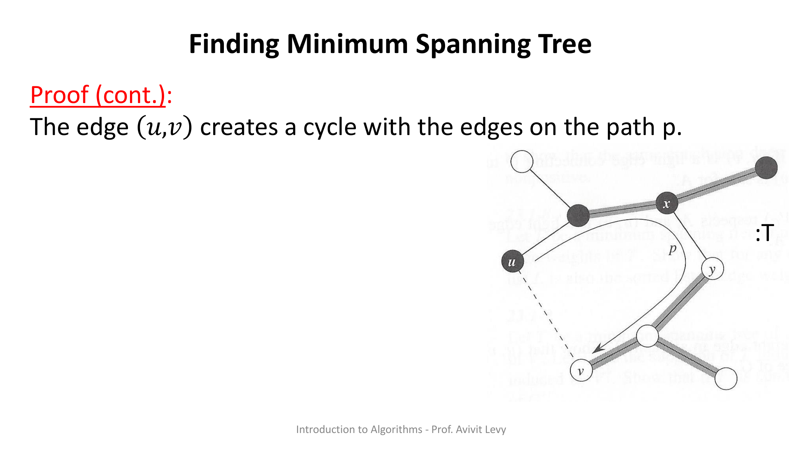
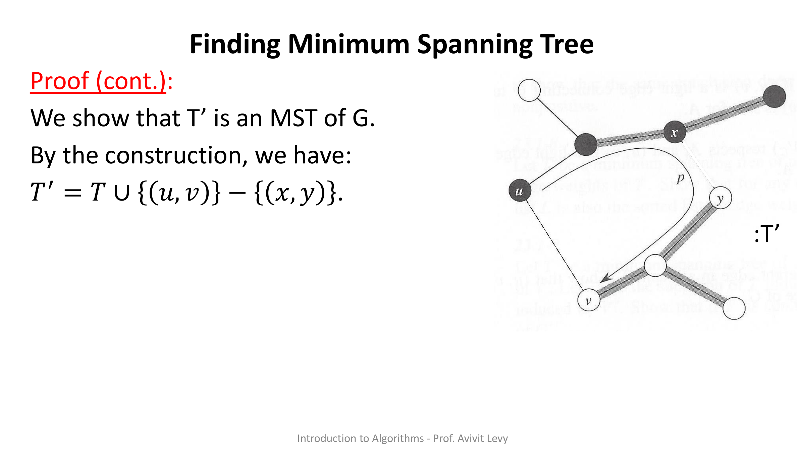
כעת מחשבים משקל: w(T') = w(T) + w(u,v) − w(x,y). מכיוון ש־(u,v) קלה לחתך ו־(x,y) חוצה את אותו חתך, מתקיים w(u,v) ≤ w(x,y), ולכן:
- (1) w(T') ≤ w(T) — כי החלפנו קשת כבדה בקלה יותר.
- (2) w(T) ≤ w(T') — כי T הוא עפ"מ, ואי אפשר לרדת מתחת למינימום.
משילוב (1) ו־(2): w(T')=w(T) — כלומר גם T' הוא עפ"מ.
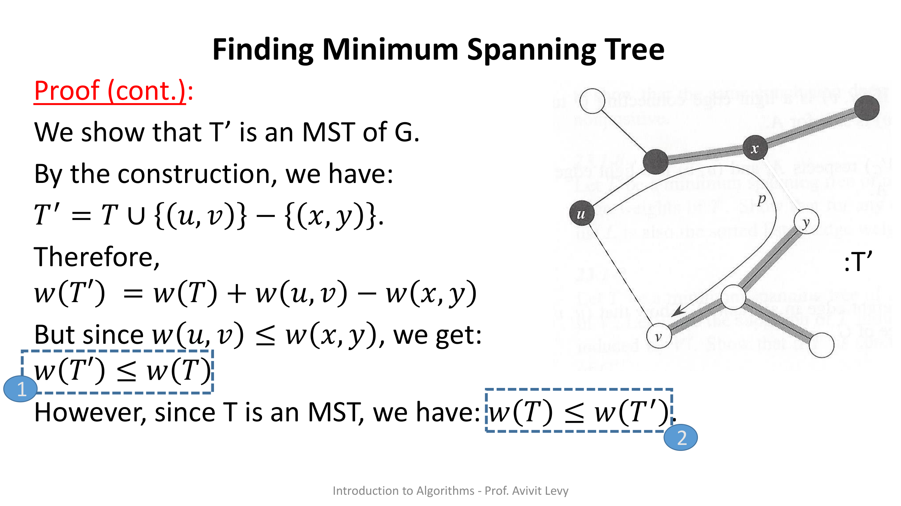
נותר להראות ש־A∪{(u,v)} ⊆ T'. הקשת (u,v) ב־T' לפי הבנייה. וכל קשת של A נמצאת ב־T' — שכן כל קשתות T נשמרו פרט ל־(x,y), אבל (x,y)∉A: החתך מכבד את A, ולכן אף קשת ב־A אינה חוצה אותו — בעוד (x,y) דווקא כן חוצה. מכאן (u,v) בטוחה עבור A. ∎
מקור: minimum-spanning-tree.pdf (עמ' 5–21)
4. אלגוריתם Prim
ב־Prim הקבוצה A היא תמיד עץ יחיד שגדל. מתחילים מקדקוד שורש r ובכל צעד מצרפים לעץ את הקשת המינימלית שמחברת את העץ הנוכחי לקדקוד שעדיין מחוצה לו. זו בדיוק קשת קלה עבור החתך (עץ, שאר הקדקודים) — ולכן בטוחה לפי המשפט.
המימוש היעיל משתמש ב־תור עדיפויות מינימום Q. לכל קדקוד u שומרים שני שדות: key[u] — משקל הקשת הקלה ביותר שמחברת אותו לעץ הנבנה, ו־π[u] — הקדקוד האב שדרכו החיבור.
4.1 MST-PRIM — הפסאודו־קוד
1. For each u∈V[G] 2. do key[u] ← ∞ 3. π[u] ← NIL 4. Key[r] ← 0 5. Q ← V[G] 6. While Q ≠ ∅ 7. do u ← Extract-Min(Q) 8. for each v ⊆ Adj[u] 9. do if v∈Q and w(u,v) < key[v] 10. then π[v] ← u 11. key[v] ← w(u,v)
הסבר שורה־שורה:
- שורות 1–3: אתחול — לכל קדקוד key=∞ ו־π=NIL (עדיין לא מחובר, אין אב).
- שורה 4: לשורש r קובעים key=0 כדי שהוא ייחלץ ראשון.
- שורה 5: התור Q מכיל את כל הקדקודים.
- שורה 6: כל עוד Q אינו ריק (יש קדקוד שטרם צורף לעץ).
- שורה 7: Extract-Min מחזיר את הקדקוד u בעל ה־key המינימלי ומוציא אותו מ־Q — כלומר מצרף אותו לעץ.
- שורה 8: עוברים על כל שכן v של u (Adj[u]).
- שורה 9: אם v עדיין ב־Q (מחוץ לעץ) ו־w(u,v) < key[v] — מצאנו חיבור זול יותר.
- שורות 10–11: מעדכנים π[v]←u ו־key[v]←w(u,v). זוהי פעולת ה־relaxation של Prim (מקבילה לזו של Dijkstra, אך על משקל הקשת עצמה ולא על סכום מסלול).
מקור: lec-mst-part-2.pdf (עמ' 9–16)
5. מעקב מלא (trace) של Prim על המשולש
נריץ את MST-PRIM על המשולש A,B,C (A–C=2, A–B=3, C–B=1) עם שורש r=C. עקבו אחר key, π ותוכן Q בכל שלב:
| שלב | Extract-Min | key[A] | key[B] | key[C] | Q אחרי | עדכונים |
|---|---|---|---|---|---|---|
| אתחול | — | ∞ | ∞ | 0 | [A,B,C] | כל π=NIL |
| 1 | u=C | 2 | 1 | 0 | [A,B] | relax A דרך C–A=2 → key[A]=2, π[A]=C; relax B דרך C–B=1 → key[B]=1, π[B]=C |
| 2 | u=B | 2 | 1 | 0 | [A] | שכן A דרך B–A=3: 3 > key[A]=2 → אין עדכון |
| 3 | u=A | 2 | 1 | 0 | [ ] | אין עדכונים — סוף |
התוצאה: עפ"מ = {C–B (1), C–A (2)} במשקל כולל 3, עם π[A]=C ו־π[B]=C. שימו לב שבשלב 2 הקשת B–A=3 לא עדכנה את key[A] כי כבר היה בידינו חיבור זול יותר (2).
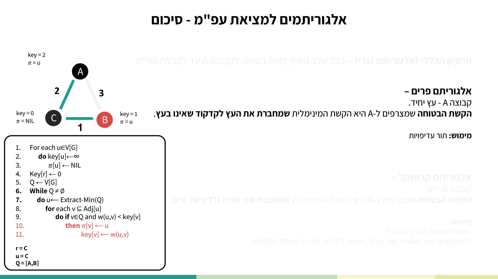
מקור: lec-mst-part-2.pdf (עמ' 9–16)
6. ניתוח סיבוכיות
עלות Prim נקבעת כולה ע"י מימוש תור העדיפויות. הטבלה הבאה מפרטת את עלות שורות הפסאודו־קוד בשני מימושים: תור לינארי (מערך) מול ערמה בינארית:
| Command Number | Linear Queue | Binary Heap |
|---|---|---|
| 1–3 (אתחול) | Θ(|V|) | Θ(|V|) |
| 4 | Θ(1) | Θ(log|V|) |
| 5 | Θ(|V|) | Θ(|V|) |
| 6×{7} (Extract-Min) | Θ(|V|²) | Θ(|V|·log|V|) |
| 6×{8–11} (עדכוני key / Decrease-Key) | O(|E|) | Θ(|E|·log|V|) |
| סה"כ | Θ(|V|²) | Θ(|E|·log|V|) |
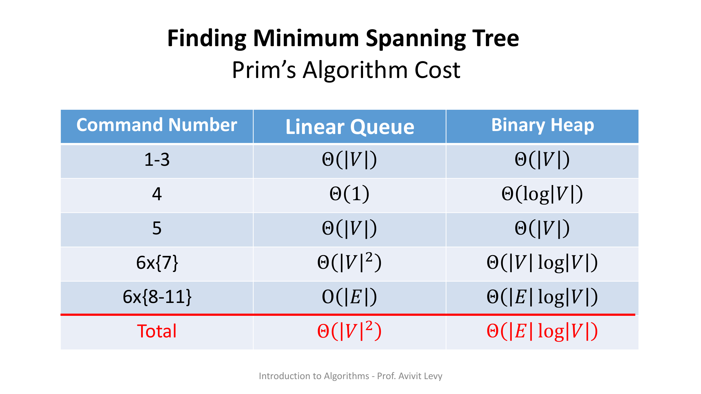
מקור: minimum-spanning-tree.pdf (עמ' 22), lec-mst-part-2.pdf (עמ' 31)
7. תרגילי הקורס
אלה תרגילי התרגול שהמרצה פתרה בכיתה סביב תכונת החתך ואלגוריתם Prim. הטקסט והפתרונות מובאים כלשונם מהשקפים, עם הסבר מודרך. שווה לתרגל אותם ידנית — המבחן כולל שאלה מתרגילי הבית.
⬇ שאלות — hw-mst.pdf ⬇ פתרון — sol-hw-mst.pdf ⬇ שאלות — hw-mst-prim-kruskal.pdf ⬇ פתרון — sol-hw-mst-prim-kruskal.pdf
תרגיל 1 — קשת מינימלית שייכת לעפ"מ
נתון: תהי (u,v) קשת בעלת משקל מינימלי בגרף G.
צ"ל: הראו כי (u,v) שייכת לעפ"מ כלשהו של G.
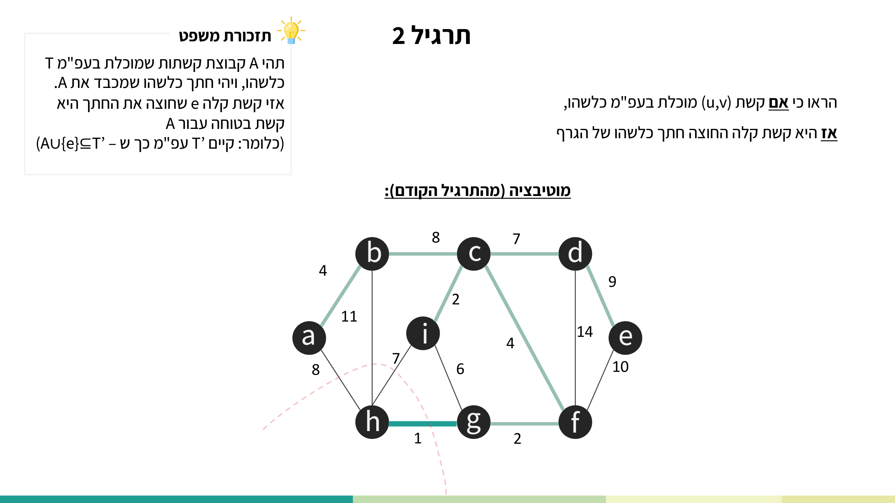
פתרון (כלשונו):
- נבחר את החתך ({u}, V\{u}) – חתך שבו u ו־v אינם באותה קבוצה.
- נבחר A כקבוצה ריקה.
נקבל כי (u,v) קשת קלה החוצה את החתך – כי היא מינימלית ב־G, ולכן היא בטוחה עבור A – כלומר, (u,v) מוכלת בעפ"מ כלשהו. מ.ש.ל
הסבר מודרך: החתך ({u}, V\{u}) מבודד את u. כל קשת החוצה אותו יוצאת מ־u, וביניהן (u,v) מינימלית — ולמעשה מינימלית בכל הגרף — ולכן היא קלה לחתך. החתך מכבד את A=∅ באופן ריק (אין קשתות ב־A). לפי משפט הקשת הבטוחה, קשת קלה החוצה חתך שמכבד את A היא בטוחה — ומכאן שהיא בעפ"מ כלשהו.
תרגיל 2 — הכיוון ההפוך
נתון/צ"ל: הראו כי אם קשת (u,v) מוכלת בעפ"מ כלשהו, אז היא קשת קלה החוצה חתך כלשהו של הגרף.
פתרון (כלשונו):
יהי T, עפ"מ שמכיל את (u,v). נוציא את הקשת (u,v) מ־T ובכך ננתק אותו, כלומר, נחלק את קודקודיו לשתי קבוצות. נקבע חלוקה זו להיות החתך.
כעת, הקשת (u,v) בטוחה עבור הקבוצה T\{(u,v)} (כי היא הייתה מוכלת בעץ T מלכתחילה). כלומר, היא קשת קלה החוצה את החתך שיצרנו (היא לא תגדיל את משקל העץ הפורש המינימלי). מ.ש.ל
הסבר מודרך: הסרת קשת מעץ פורש תמיד מפצלת אותו לשני רכיבים — וזו בדיוק חלוקה של הקדקודים, כלומר חתך. הקשת (u,v) היא היחידה מ־T שחוצה אותו. אילו הייתה קשת חוצה זולה יותר, החלפתה בתוך T הייתה מקטינה את משקל העץ — בסתירה לכך ש־T מינימלי. לכן (u,v) קלה לחתך זה.
תרגיל 3 — דוגמה נגדית: כל הקשתות הקלות אינן בהכרח עפ"מ
נתון/צ"ל (כלשונו): הביאו דוגמה פשוטה לגרף קשיר שבו קבוצת כל הקשתות שהן קשתות קלות החוצות חתך כלשהו של הגרף — אינה יוצרת עץ פורש מינימלי.
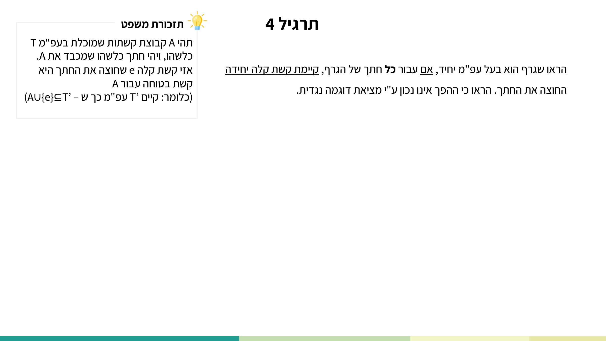
הסבר הדוגמה (כלשונו):
דוגמה פשוטה – משולש שבו כל משקלי הקשתות שווים. כל קשת היא קלה שחוצה חתך, אבל המשולש הוא מעגל ולכן אינו עץ פורש מינימלי.
הסבר מודרך: קחו משולש a,b,c עם a–b=1, b–c=1, a–c=1. לכל חתך שמפצל קדקוד אחד מהשניים האחרים, שתי הקשתות החוצות שוות (1), וכל אחת מהן קלה עבור חתך כלשהו. אך אם ניקח את שלושתן יחד קיבלנו מעגל בעל 3 קשתות — ועפ"מ חייב להיות חסר מעגלים ובעל |V|−1=2 קשתות בלבד. המסקנה: "קבוצת כל הקשתות הקלות" אינה בהכרח עפ"מ.
תרגיל 4 — יחידות העפ"מ
נתון: הראו שגרף הוא בעל עפ"מ יחיד, אם עבור כל חתך של הגרף קיימת קשת קלה יחידה החוצה את החתך.
צ"ל: הראו כי ההפך אינו נכון ע"י מציאת דוגמה נגדית.
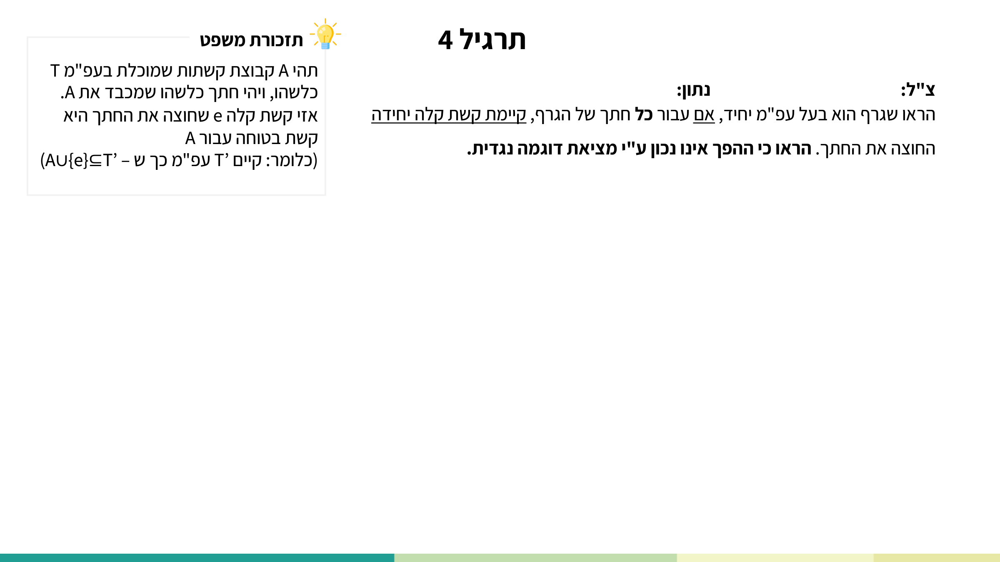
פתרון הכיוון הראשון (כלשונו):
נניח בשלילה שבגרף G שבו עבור כל חתך קיימת קשת קלה יחידה, קיימים שני עצים פורשים מינימליים שונים, T ו־T'. נראה כי כל קשת ב־T נמצאת גם ב־T' (כלומר, הם בעצם אותו העץ):
- תהי (u,v) קשת כלשהי ב־T. נוציא את (u,v) מ־T ובכך נחלק את קדקודיו לשתי קבוצות. נקבע חלוקה זו להיות החתך ({u}, T\{u}).
- כעת, נניח כי הקשת שחוצה את אותו החתך ב־T' היא הקשת (x,y). כלומר, גם הקשת (x,y) היא קשת קלה החוצה את החתך.
- מכיוון שנתון שעבור כל חתך קיימת קשת קלה יחידה שחוצה אותו – יוצא כי (u,v) ו־(x,y) הן אותה קשת. כלומר, (u,v)∈T'.
מכיוון שבחרנו קשת שרירותית ב־T, נוכל להניח שכל קשת ב־T היא קשת ב־T' ⇐ T=T' והוא עפ"מ יחיד בגרף. מ.ש.ל
דוגמה נגדית לכיוון ההפוך: מסלול a–b–c עם a–b=1, b–c=1. זהו עפ"מ יחיד (רק שתי קשתות, אין ברירה אחרת), אך עבור החתך ({b}, {a,c}) חוצות אותו שתי קשתות במשקל 1 — כלומר אין קשת קלה יחידה. לכן: עפ"מ יחיד ⇏ קשת קלה יחידה לכל חתך.
תרגיל 5 — עץ פורש מינימלי "אדום ביותר" (Prim על משקל מותאם)
שאלה (כלשונה): נתון גרף קשיר ולא מכוון G=(V,E), עם פונקציית המשקל W:E → ℕ. כל קשת בגרף צבועה באדום או בשחור. הציעו אלגוריתם שמוצא עץ פורש מינימלי אדום ביותר (עפ"מ עם מקסימום קשתות אדומות).
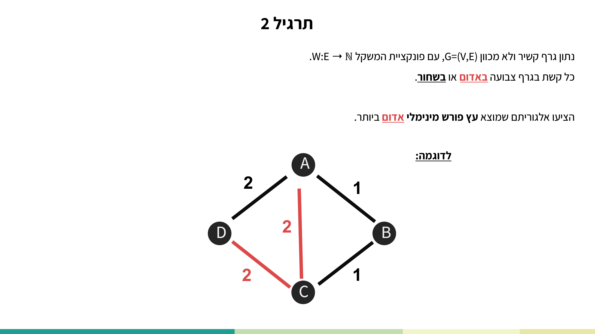
מוטיבציה (כלשונה): נרצה לתת עדיפות לקשתות אדומות על פני קשתות שחורות מאותו משקל, כדי שעבור כל בחירה בין קשתות עם משקל זהה נעדיף את הקשת האדומה. לשם כך נגדיר פונקציית משקל חדשה:
W'(e) = w(e) − 0.1 אם e אדומה ; W'(e) = w(e) אם e שחורה.
האלגוריתם (כלשונו):
redest_MST(G, w, color): 1. w' ← E → R⁺ 2. for x ∈ V[G]: 3. for y ∈ Adj[u]: 4. do if color(u,v) = red: 5. then w'(x,y) ← w(u, v) − 0.1 6. else w'(x,y) ← w(u, v) 7. MST-Prim(G, w', first(V[G])) 8. output(G)
סיבוכיות: שורות 1–6 (בניית w'): Θ(|E|+|V|); שורה 7 (MST-Prim): Θ(|E|·log|V|); שורה 8: Θ(1). סה"כ: Θ(|E|·log|V|).
נכונות (כלשונו) — שלושה מקרים:
- קשת אדומה היא קשת קלה יחידה ב־w עבור החתך – קשת זו הייתה נבחרת ממילא, והקטנתה ב־w' לא תשפיע על הבחירה.
- קשת אדומה היא לא קשת קלה יחידה ב־w – קיימת קשת שחורה במשקל זהה. עבור w הבחירה בין הקשתות הזהות אקראית ולא בהכרח תיבחר האדומה. הקטנת הקשתות האדומות ב־ε=0.1 ב־w' מבטיחה בחירה ודאית של הקשת האדומה. מכיוון שהקטנו במשקל קטן מ־1 והמשקלים שלמים — לא השפענו על שאר הקשתות.
- אין קשת קלה אדומה ב־w עבור החתך – הקטנה במספר קטן מ־1 לא תשנה את העובדה שקשת אדומה לא תיבחר (או שאין כזו, או שקיימת שחורה זולה יותר).
מ.ש.ל
הסבר מודרך: הטריק היחיד הוא שבירת תיקו. מאחר שהמשקלים שלמים, הפרש בין שני משקלים שונים הוא לפחות 1; חיסור 0.1 מקשת אדומה לעולם לא יהפוך אי־שוויון חזק בין משקלים שלמים שונים, אלא רק ישבור שוויון לטובת האדום. לכן העץ שמחזיר Prim על w' עדיין עפ"מ ביחס ל־w, ומבין כל העצים הפורשים המינימליים הוא בעל מקסימום קשתות אדומות.
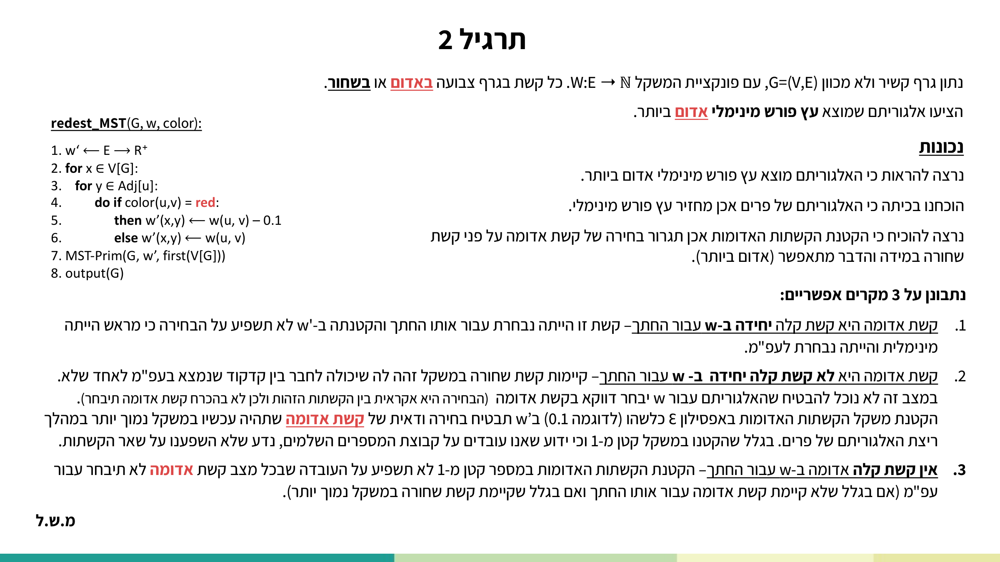
מקור: lec-mst-part-1.pdf (עמ' 11–30), lec-mst-part-2.pdf (עמ' 32–40)
8. בדיקה עצמית
מריצים את Prim על המשולש (C–B=1, C–A=2, A–B=3) עם שורש r=C. לאחר החילוץ הראשון (u=C) ועדכון השכנים, איזה קדקוד מחלץ Extract-Min בפעם הבאה — והאם הוא מעדכן את key[A]?
בגרף CLRS הקשת בעלת המשקל המינימלי היא g–h=1. לפי משפט הקשת הבטוחה, מדוע היא שייכת לעפ"מ כלשהו?
משולש שכל שלוש קשתותיו במשקל 1: כל קשת היא קלה עבור חתך כלשהו. מדוע קבוצת כל הקשתות הקלות בכל זאת אינה עץ פורש מינימלי?
מהי סיבוכיות הזמן של Prim כאשר תור העדיפויות ממומש בערמה בינארית (binary heap)?
בהוכחת המשפט מחליפים את (x,y) ב־(u,v) ומקבלים T'=T∪{(u,v)}−{(x,y)}. מדוע מובטח ש־w(T') ≤ w(T)?